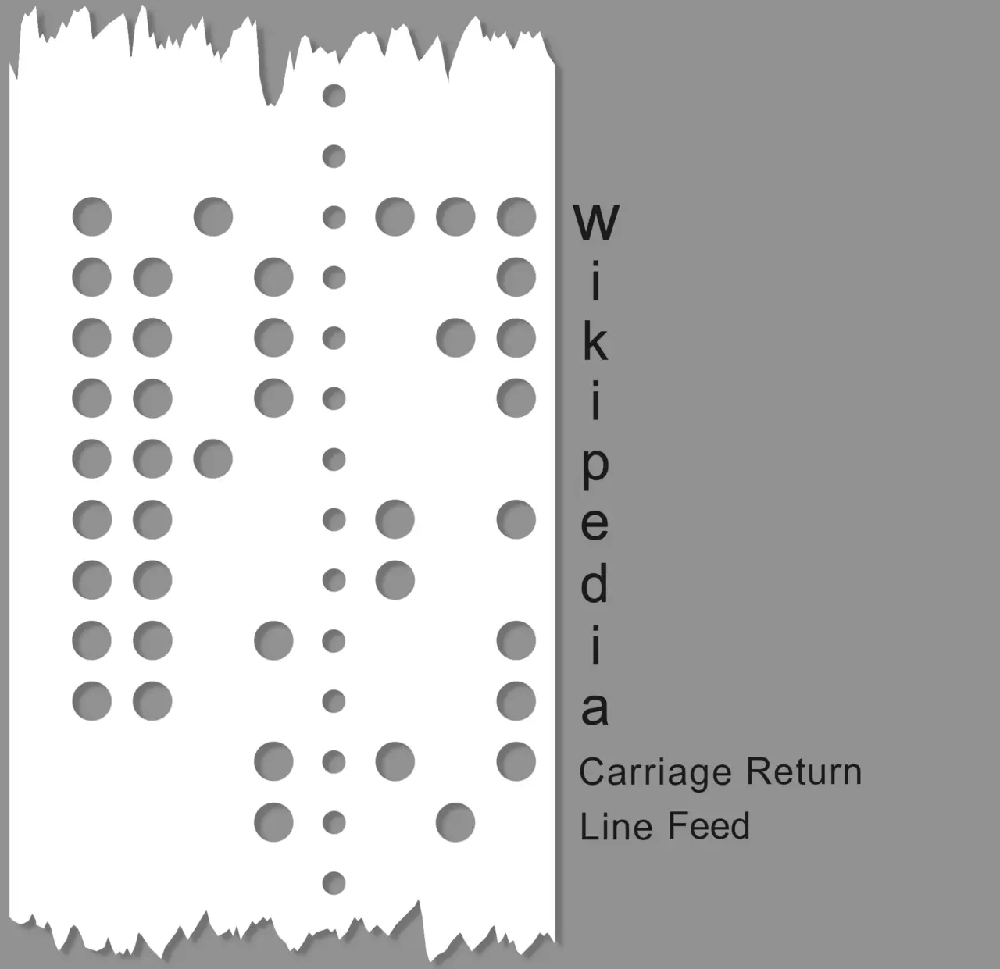

Short answer
Character encoding is the map from characters to the bytes a server sends and a browser reads.
The tape in the figure is an old map: holes for the letters of Wikipedia, plus the labels Carriage Return and Line Feed. It is a picture of the idea that letters are a code, not a picture of a modern HTML file. SEO Health cares that the code you declare is the code you sent, so a Chinese product name and an English unit do not turn into replacement characters.
Definition
Browsers guess when the declaration is missing, and the guess can differ from the file. A meta charset that says one thing while the HTTP Content-Type charset says another is two maps. The HTTP header wins in practice often enough that the template should not rely on the guess. The tape’s control labels are a reminder that some bytes are not visible letters. They are not a second charset to add to the page.
What belongs in the page basics
Declare one encoding and save the HTML file in that same encoding.
Prefer a single charset for the whole response, stated in the HTTP header and repeated with a meta charset in the first bytes of the document so a saved copy still knows. Do not convert a UTF-8 file to a legacy encoding in a build step and leave the meta unchanged. Open a page that contains both a Chinese name and an English abbreviation and read those strings in the fetched source.

What to check
- One charset in the HTTP header and the meta
- The file saved in that charset
- Chinese and Latin text both readable in the source
- No build step that recodes without changing the declaration
- One bilingual URL fetched and read
A practical example
A translated specification was saved in a legacy encoding while the template still declares UTF-8. The Chinese name becomes a row of replacement marks, and the fetch shows those same marks. The repair re-saves the file as the declared encoding and re-fetches. The paper tape is only the historical picture of a code. It is not the file the template should emit.
What this does not claim
A correct encoding does not guarantee rankings or citations.
Where Mika Visibility files this
Mika Visibility files titles, headings, language, and media basics under SEO Health content and structure checks. They help a page be understood. They are not SEO Growth, which asks what coverage is still missing, and they are not a guarantee that an answer product will cite the page.
The tape shows one old way to encode letters. The check is the bytes of your own HTML.
FAQ
What is character encoding?
Character encoding is the map from characters to the bytes a server sends and a browser reads.
What must the declaration match?
Declare one encoding and save the HTML file in that same encoding.
Does a correct encoding guarantee rankings?
A correct encoding does not guarantee rankings or citations.
Next step
Run a structured SEO + GEO audit to see health findings, growth gaps, and a blueprint you can act on.
Clearer entities, answers, evidence, and context make pages easier to understand and reference. Results in any answer product are not guaranteed.